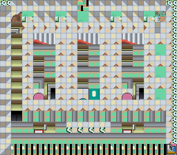
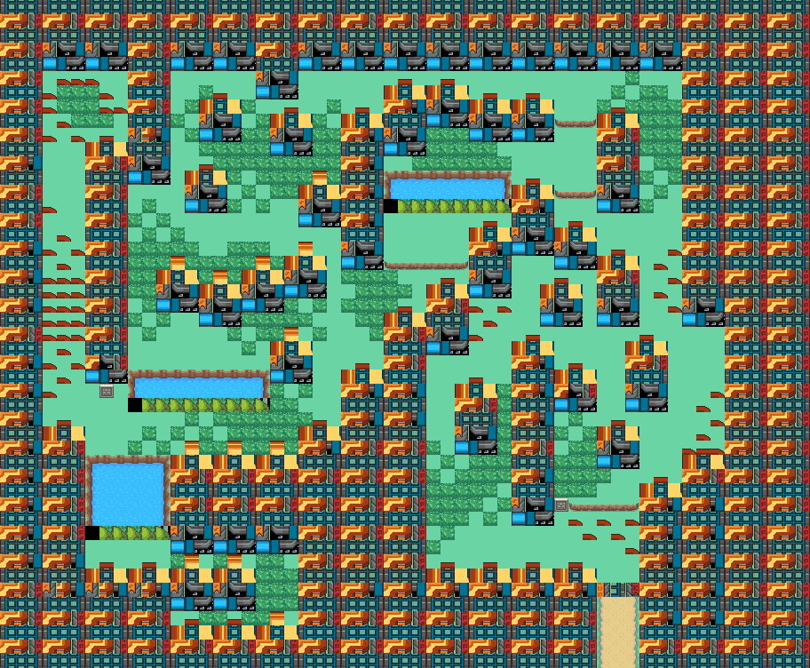
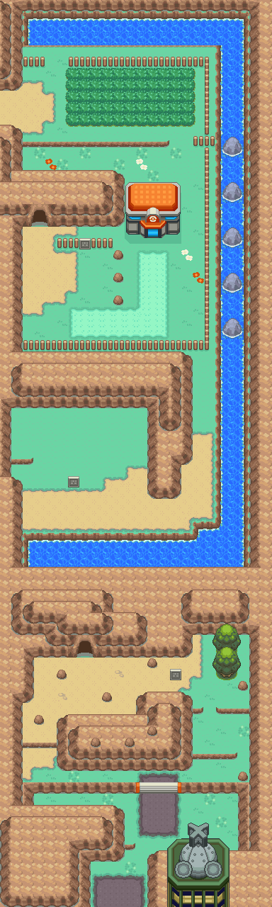
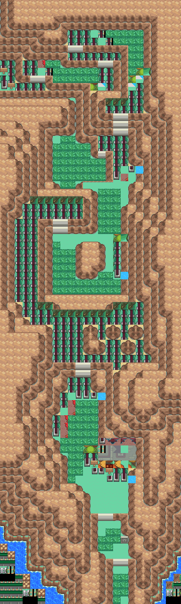
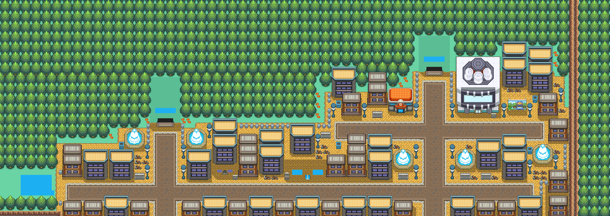
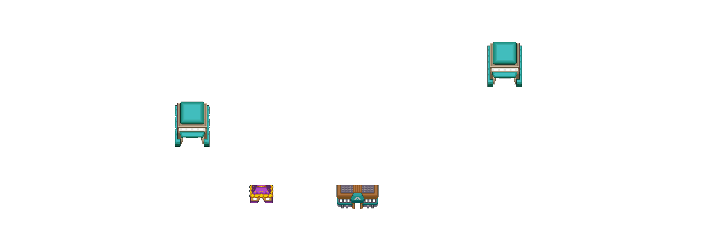

樱子果
让宝可梦使用或携带， 可以在战斗时解除麻痹。
获取：圣安奴号(14,6) ／ 漩涡岛(14,23) ／ 10号公路(6,26) ／ 44号道路(15,66) ／ 满金市(56,13) ／ 浅葱市 ／ 桔梗市(54,58) ／ 满金市(36,13)
用途
让宝可梦使用或携带， 可以在战斗时解除麻痹。
标价 20 口袋：树果袋
获取方式
地面隐藏
- 圣安奴号（区域128） · (14,6) · 数量 1 · 地图｜静态图
- 漩涡岛（区域176） · (14,23) · 数量 1 · 地图｜静态图
- 10号公路（区域110） · (6,26) · 数量 1 · 地图｜静态图
- 44号道路（区域169） · (15,66) · 数量 1 · 地图｜静态图
- 满金市（区域147） · (56,13) · 数量 1 · 地图｜静态图
人物剧情
- 浅葱市（区域149） · 赠予宝可梦携带（等级 20） · 地图｜静态图 · 触发条件待补
- 桔梗市（区域145） · (54,58) · 与坐标处人物交互 · 数量 1 · 地图｜静态图 · 触发条件待补
- 桔梗市（区域145） · (54,58) · 与坐标处人物交互 · 数量 3 · 地图｜静态图 · 触发条件待补
- 满金市（区域147） · (36,13) · 与坐标处人物交互 · 数量 1 · 地图｜静态图 · 触发条件待补
数据来源
- 来源文档：out/items.json（
/133） - 表索引 index 0133；内嵌 itemId 133；口袋 BERRY_POUCH (id=5)；type 1；hold_effect 2/0；importance 0；unk19 1
- 获取来源文档：maps_research/out/events/events.json、maps_research/out/scripts/scripts.json
- 获取记录 ID：
hidden:1:10:2、hidden:1:109:7、hidden:3:28:5、hidden:3:64:0、hidden:3:77:5、gift:08AFEDCC:3:72、script_item_candidate:std:089CDEEE:3:68、script_item_candidate:std:089E5F84:3:68、script_item_candidate:std:08F53831:3:75 - 说明文字解码来源：
reference/SAVE_HOME_GAME_DATA.json.charmap
相关支线
任务可能要求携带本条目，或将其作为奖励；具体用途见任务步骤。
地点地图
共享RGB底图；点击可缩放定位。数字对应本页相关地点，不代表地图上全部事件。
圣安奴号

1 樱子果（14,6）
漩涡岛

1 樱子果（14,23）
10号公路

1 樱子果（6,26）
44号道路

1 樱子果（15,66）
满金市·酒吧所在城区


1 樱子果（56,13）
浅葱市


地图范围记录：当前资料没有精确人物／遭遇坐标。